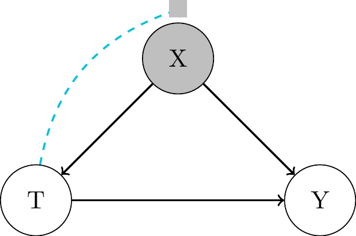
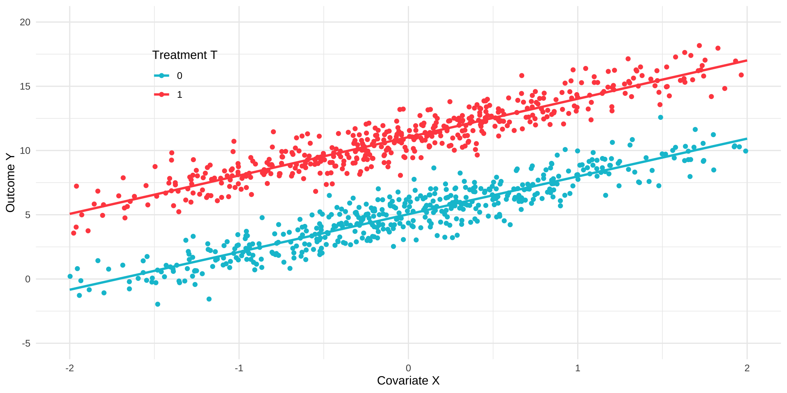
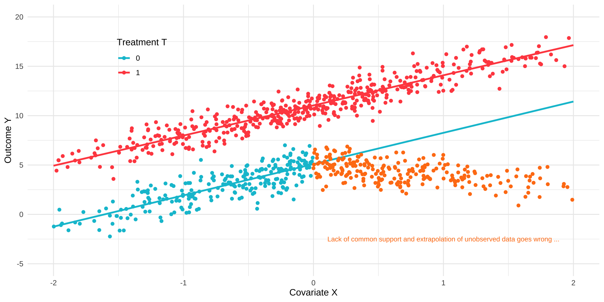
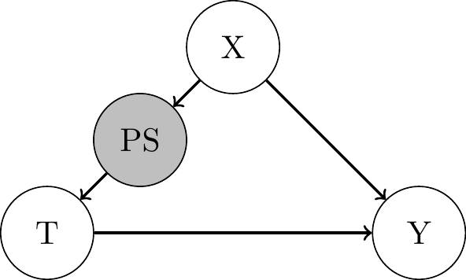

(4) Observed Confounding
Causal Data Science for Business Analytics
Hamburg University of Technology
Tuesday, 14. May 2024
Identification
What to do without randomized experiment?
- In many business settings, randomization of treatments is not possible.
- We need to find ways to work with so-called
observational data.
- We need to find ways to work with so-called
- Identification strategy to adjust for all confounders has many names:
- Ignorability
- Unconfoundedness
- Selection-on-observables
- Conditional independence
- Backdoor adjustment
- Measured confounding
- Observed Confounding
Assumption 1: Conditional Independence
- Potential outcomes are conditionally independent of \(T\) after controlling for covariates \(\mathbf{X}\).
- \(T\) is as good as randomly assigned among subjects with the same values in \(\mathbf{X}\).
Assumption: “Conditional Exchangeability / Unconfoundedness / Ignorability / Independence”.
Formally, \((Y(1), Y(0)) \perp\!\!\!\perp T \, | \, \mathbf{X}\).
- This entails the somewhat weaker, but sufficient formulation of conditional exchangeability in terms of means:
- before treatment: \(\mathbb{E}[Y_i(0)|T_i=0, \mathbf{X_i = x_i}] = \mathbb{E}[Y_i(0)|T_i=1, \mathbf{X_i = x_i}]\)
- after treatment: \(\mathbb{E}[Y_i(1)|T_i=1, \mathbf{X_i = x_i}] = \mathbb{E}[Y_i(1)|T_i=0, \mathbf{X_i = x_i}]\)
- differences in mean potential outcomes across treatment and control groups are entirely due to differences in observed covariates.
Backdoor Adjustement
- all confounders observed, measured and controlled for

- some confounders remain unobserved

- Minimal adjustment set of confounders to be observed: not testable.
- Sensitivity analysis can be used to assess the robustness of the results to unobserved confounding (later session).
Observed Confounder Selection
- Credible identification demands to define the adjustment set of variables that makes conditional independence assumption credible to hold.
- This requires good theoretical or practical knowledge about the treatment assignment mechanism.
- DAGs provide a principled framework to structure that knowledge and to disentangle good and bad controls:
- No post-treatment variables, etc …
- See Cinelly, Forley and Pearl (2022) for a nice overview.
Assumption 2: Common Support
- Conditioning on many covariates can also be detrimental, because we might end up conditioning on a zero probability event for some subgroups / values of X (division by zero)
Assumption: “Positivity / Overlap / Common Support”.
For all values of covariates \(x\) present in the population of interest (i.e. \(x\) such that \(P(X=x) > 0\)), we have \(0 < P(T=1|X=x) < 1\).
- There is a trade-off between positivity and conditional independence.
- Some models might be forced to extrapolate to regions without sufficient support by using their parametric assumptions.
- Parametric instead of non-parametric identification.
Common Support & Extrapolation


ATE under Observed Confounding
- With the assumptions of conditional unconfoundedness & positivity (together with consistency, and no interference), we can identify the ATE as:
Theorem: “Identification of the ATE”:
\(\tau_{\text{ATE}} = \mathbb{E}[Y_i(1)] - \mathbb{E}[Y_i(0)] = \mathbb{E_X}[\mathbb{E}[Y_i|T_i=1, X_i] - \mathbb{E}[Y_i|T_i=0, X_i]]\)
ATE under Observed Confounding
Proof:
\[ \begin{align*} \tau_{\text{ATE}} = \mathbb{E}[\tau_i] &= \mathbb{E}[Y_i(1) - Y_i(0)] \\ &= \mathbb{E}[Y_i(1)] - \mathbb{E}[Y_i(0)] \\ &\text{(linearity of expectation)} \\ &= \mathbb{E}_X [\mathbb{E}[Y_i(1) \mid X_i]] - \mathbb{E}_X [\mathbb{E}[Y_i(0) \mid X_i]] \\ &\text{(law of iterated expectations)} \\ &= \mathbb{E}_X [\mathbb{E}[Y_i(1) \mid T_i = 1, X_i]] - \mathbb{E}_X [\mathbb{E}[Y_i(0) \mid T_i = 0, X_i]] \\ &\text{(conditional ignorability and positivity)} \\ &= \mathbb{E}_X [\mathbb{E}[Y_i \mid T_i = 1, X_i]] - \mathbb{E}_X [\mathbb{E}[Y_i \mid T_i = 0, X_i]] \\ &\text{(consistency)} \end{align*} \]
Conditional Outcome Regression
Identification with Linear Regression
Most direct approach is to run a linear regression conditional on covariates:
\(Y_i = \beta_0 + \beta_T T_i + \beta_{X_1} X_{i1} + \dots + \beta_{X_K} X_{iK} + \epsilon_i\)
\(Y_i = \beta_0 + \beta_T T_i + \mathbf{\beta_{X}' X_i} + \epsilon_i\)
\(\mathbb{E}[Y_i | T_i, \mathbf{X_i}] = \beta_0 + \beta_T T_i + \mathbf{\beta_{X}' X_i}\)
- If this linear model is correct, then (given \(T_i\) is binary):
- \(\tau_{\text{CATE}} = \mathbb{E}[Y_i | T_i = 1, \mathbf{X_i}] - \mathbb{E}[Y_i | T_i = 0, \mathbf{X_i}]\)
- \(\tau_{\text{CATE}} = (\beta_0 + \beta_T \cdot 1 + \mathbf{\beta_{X}' X_i}) - (\beta_0 + \beta_T \cdot 0 + \mathbf{\beta_{X}' X_i}) = \beta_T\)
- \(\tau_{\text{ATE}} = \mathbb{E_X}[\beta_T] = \beta_T\)
Frisch-Waugh-Lovell (FWL) Theorem
- We can estimate \(\beta_T\) in a standard linear regression \(Y_i = \beta_0 + \beta_T T_i + \mathbf{\beta_{X}' X_i} + \epsilon_i\) in a
three-stage procedure:
Run a regression of the form \(Y_i = \beta_{Y0} + \mathbf{\beta_{Y \sim X}' X_i} + \epsilon_{Y_i \sim X_i}\) and extract the estimated residuals \(\hat\epsilon_{Y_i \sim X_i}\).
Run a regression of the form \(T_i = \beta_{T0} + \mathbf{\beta_{T \sim X}' X_i} + \epsilon_{T_i \sim X_i}\) and extract the estimated residuals \(\hat\epsilon_{T_i \sim X_i}\).
Run a residual-on-residual regression of the form \(\hat\epsilon_{Y_i \sim X_i} = \beta_T \hat\epsilon_{T_i \sim X_i} + \epsilon_i\) (no constant).
The resulting estimate \(\hat\beta_T\) is numerically identical to the estimate we would get if we just run the full OLS model.
Controlling for Covariates: FWL Theorem Logic

Identification with Linear Regression
- OLS estimate of \(\hat{\beta_T}\) is now given by:
- \(Y_i = \hat{\beta_0} + \hat{\beta}_T T_i + \mathbf{\hat{\beta}_{X}' X_i} + \hat{\epsilon}_i\)
- \(\hat{\beta_T} = \frac{\text{Cov}(Y_i, T_i | \mathbf{X_i})}{\text{Var}(T_i | \mathbf{X_i})}\)
- Difference to randomized experiments: \(\mathbf{X_i}\) may affect \(T_i\), i.e. \(\text{Cov}(T_i, \mathbf{X_i}) \neq 0\)
- Two possible implications:
- \(se(\hat{\beta_T})\) may be larger than in randomized experiments.
- if the linear model is misspecified, \(\hat{\beta_T}\) may be biased and inconsistent.
- if the relation between \(Y_i\) and \(\mathbf{X_i}\) is in fact non-linear, this spills over to the estimation of \(\hat{\beta_T}\) via the correlation of \(T_i\) and \(\mathbf{X_i}\).
Identification with Linear Regression
- Possible misspecifications: Omission of …
- Multiplicative interactions between covariates: e.g. \(X_{i1} \cdot X_{i2}\).
- Higher order terms: e.g. \(X_{i1} \cdot X_{i1} = X_{i1}^2\).
- Interactions between treatment and covariates to allow for
effect heterogeneity: e.g. \(T_i \cdot X_{i1}\).
- Interactions between treatment and covariates to allow for
- More flexible model:
- \(\mathbb{E}[Y_i | T_i, \mathbf{X_i}] = \beta_0 + \beta_T T_i + \mathbf{\beta_{X}' X_i} + \mathbf{\beta_{TX}' X_i}T_i + \beta_{X^2_1} X^2_{i1} + \dots + \beta_{X_1X_2} X_{i1} X_{i2} + \dots\)
- \(\tau_{\text{CATE}} = \mathbb{E}[Y_i | T_i = 1, \mathbf{X_i}] - \mathbb{E}[Y_i | T_i = 0, \mathbf{X_i}]\)
- \(\tau_{\text{CATE}} = \beta_T + \mathbf{\beta_{TX}' X_i}\)
- \(\tau_{\text{ATE}} = \mathbb{E_X}[\tau_{\text{CATE}}] = \mathbb{E_X}[\beta_T + \mathbf{\beta_{TX}' X_i}] = \beta_T + \beta_{TX}'\mathbb{E_X}[\mathbf{X_i}] = \beta_T + \mathbf{\beta_{TX}'\overline{X}}\)
Identification with Linear Regression
- Alternatively, estimate two separate models for treated and control group:
- \(\mathbb{E}[Y_i | T_i = 1, \mathbf{X_i}] = \beta_{0,1} + \mathbf{\beta_{X,1}' X_i} + \beta_{X^2_1,1} X^2_{i1} + \dots + \beta_{X_1X_2,1} X_{i1} X_{i2} + \dots\)
- \(\mathbb{E}[Y_i | T_i = 0, \mathbf{X_i}] = \beta_{0,0} + \mathbf{\beta_{X,0}' X_i} + \beta_{X^2_1,0} X^2_{i1} + \dots + \beta_{X_1X_2,0} X_{i1} X_{i2} + \dots\)
- \(\tau_{\text{CATE}} = \mathbb{E}[Y_i | T_i = 1, \mathbf{X_i}] - \mathbb{E}[Y_i | T_i = 0, \mathbf{X_i}]\)
- Then averaging:
- \(\tau_{\text{ATE}} = \mathbb{E_X}[\tau_{\text{CATE}}] = \mathbb{E_X}[\mathbb{E}[Y_i | T_i = 1, \mathbf{X_i}] - \mathbb{E}[Y_i | T_i = 0, \mathbf{X_i}]]\)
Conditional Outcome Regression: Example
- Assess the impact of participating in the U.S. National Supported Work (NSW) training program targeted to 445 individuals with social and economic problems on their real earnings.
library(Matching) # load Matching package for the data
library(Jmisc) # load Jmisc package with demean function
library(lmtest) # load lmtest package
library(sandwich) # load sandwich package
library(modelsummary) # load modelsummary package
data(lalonde) # load lalonde data
attach(lalonde) # store all variables in own objects
T = treat # define treatment (training)
Y = re78 # define outcome
X = cbind(age,educ,nodegr,married,black,hisp,re74,re75,u74,u75) # covariates
DXdemeaned = T * demean(X) # interaction of D and demeaned X
ols = lm(Y ~ T + X + DXdemeaned) # run OLS regression
modelsummary(ols, vcov = sandwich::vcovHC, estimate = "est = {estimate} (se = {std.error}, t = {statistic}){stars}", statistic = "p = {p.value}, CI = [{conf.low}, {conf.high}]", gof_map = c("r.squared"), coef_omit = "X") | (1) | |
|---|---|
| (Intercept) | est = 7161.163 (se = 3975.959, t = 1.801)+ |
| p = 0.072, CI = [-653.935, 14976.260] | |
| T | est = 1583.468 (se = 711.171, t = 2.227)* |
| p = 0.027, CI = [185.600, 2981.336] | |
| R2 | 0.104 |
Matching
Matching Idea

Matching Methods
Idea:find and match treated and nontreated observations with similar (or ideally identical) covariate values.- create a sample of treated and nontreated groups that are comparable in terms of covariate distributions, just as it would be the case in a successful experiment.
- With or without replacement.
- 1:1 or 1:M matching.
- Methods:
- Nearest Neighbor Matching
- Radius (Caliper) Matching
- Propensity Score Matching
Nearest Neighbor Matching
- For each treated unit, find the one nearest nontreated unit in terms of covariate values (1:1 matching):
- Average treatment effect on the treated (ATT):
- \(\hat{\tau}_{\text{ATT}} = \frac{1}{n_1} \sum_{i:T_i=1} \left( Y_i - \sum_{j:T_j=0} I( \lVert \mathbf{X_j} - \mathbf{X_i} \rVert = \min_{l:T_l=0} \lVert \mathbf{X_l} - \mathbf{X_i} \rVert) Y_j) \right)\)
- Average treatment effect on the untreated (ATU):
- \(\hat{\tau}_{\text{ATU}} = \frac{1}{n_0} \sum_{i:T_i=0} \left( Y_i - \sum_{j:T_j=1} I( \lVert \mathbf{X_j} - \mathbf{X_i} \rVert = \min_{l:T_l=1} \lVert \mathbf{X_l} - \mathbf{X_i} \rVert) Y_j) \right)\)
- Average treatment effect (ATE):
- \(\hat{\tau}_{\text{ATE}} = \frac{n_1}{n} \hat{\tau}_{\text{ATT}} + \frac{n_0}{n} \hat{\tau}_{\text{ATU}}\)
Distance Measures
- Euclidean Distance:
- \(\lVert \mathbf{X_j} - \mathbf{X_i} \rVert = \sqrt{ \sum_{k=1}^{K} (X_{jk} - X_{ik})^2 }\)
- Standardized version by normalizing based on the variance of the covariates:
- \(\lVert \mathbf{X_j} - \mathbf{X_i} \rVert = \sqrt{ \sum_{k=1}^{K} \frac{(X_{jk} - X_{ik})^2}{\hat{\text{Var}}(X_k)} }\)
- Mahalanobis Distance:
- In addition, normalizing based on covariance with remaining covariates:
- \(\lVert \mathbf{X_j} - \mathbf{X_i} \rVert = \sqrt{\sum_{k=1}^{K} \sum_{l=1}^{K} \frac{(X_{jk} - X_{ik}) (X_{jl} - X_{il})}{\hat{\text{Cov}}(X_k, X_l)}}\)
1:M Matching
- 1:M matching with fixed M:
- \(\hat{\tau}_{\text{ATT}} = \frac{1}{n_1} \sum_{i:T_i=1} \left[ Y_i - \hat{\mu_0}(\mathbf{X_i}) \right]\) with \(\hat{\mu}_{0}(\mathbf{X_i}) = \frac{1}{M} \sum_{j \in J(i:T_i=1)} Y_j\)
- \(\hat{\tau}_{\text{ATU}} = \frac{1}{n_0} \sum_{i:T_i=0} \left[ Y_i - \hat{\mu_1}(\mathbf{X_i}) \right]\) with \(\hat{\mu}_{1}(\mathbf{X_i}) = \frac{1}{M} \sum_{j \in J(i:T_i=0)} Y_j\)
- \(\hat{\tau}_{\text{ATE}} = \frac{n_1}{n} \hat{\tau}_{\text{ATT}} + \frac{n_0}{n} \hat{\tau}_{\text{ATU}}\)
Regression-based correction for the biaswhich comes from not finding fully comparable matches for a reference observation:- \(\hat{\mu}_{0}(\mathbf{X_i}) = \frac{1}{M} \sum_{j \in J(i:T_i=1)} [Y_j - (\tilde{\mu}_{0}(\mathbf{X_j}) - \tilde{\mu}_{0}(\mathbf{X_i}))]\)
- \(\hat{\mu}_{1}(\mathbf{X_i}) = \frac{1}{M} \sum_{j \in J(i:T_i=0)} [Y_j - (\tilde{\mu}_{1}(\mathbf{X_j}) - \tilde{\mu}_{1}(\mathbf{X_i}))]\)
- where \(\tilde{\mu}_{0}(\mathbf{X_i})\) (respectively, \(\tilde{\mu}_{1}(\mathbf{X_i})\)) is the predicted value of \(Y\) for observation \(i\) from a regression of \(Y\) on \(X\) among the untreated (respectively, treated) group.
Radius (Caliper) Matching
- Caliper \(C\) (implies a variable M):
- \(\hat{\mu}_{0/1}(\mathbf{X_i}) = \frac{\sum_{j : T_j = 0/1} I\left(\lVert \mathbf{X_j} - \mathbf{X_i} \rVert \leq C \right) \cdot Y_i}{\sum_{j : T_j = 0/1} I\left(\lVert \mathbf{X_j} - \mathbf{X_i} \rVert \leq C \right)}\)
- With a kernel function \(\kappa\):
- \(\hat{\mu}_{0/1}(\mathbf{X_i}) = \frac{\sum_{j : T_j = 0/1} \kappa\left(\frac{\lVert \mathbf{X_j} - \mathbf{X_i} \rVert}{C}\right) \cdot Y_i}{\sum_{j : T_j = 0/1} \kappa\left(\frac{\lVert \mathbf{X_j} - \mathbf{X_i} \rVert}{C}\right)}\)
Covariate Matching: Example
- Assess the impact of participating in the U.S. National Supported Work (NSW) training program targeted to 445 individuals with social and economic problems on their real earnings.
library(Matching) # load Matching package for the data
data(lalonde) # load lalonde data
attach(lalonde) # store all variables in own objects
T = treat # define treatment (training)
Y = re78 # define outcome
X = cbind(age,educ,nodegr,married,black,hisp,re74,re75,u74,u75) # covariates
pairmatching = Match(Y=Y, Tr=T, X=X) # pair matching
summary(pairmatching) # matching output
Estimate... 1686.1
AI SE...... 866.4
T-stat..... 1.9461
p.val...... 0.051642
Original number of observations.............. 445
Original number of treated obs............... 185
Matched number of observations............... 185
Matched number of observations (unweighted). 267 pairmatching = Match(Y=Y, Tr=T, X=X, M=3, BiasAdjust = TRUE, estimand = "ATE", caliper = NULL) # pair matching
summary(pairmatching) # matching output
Estimate... 1396.3
AI SE...... 712.09
T-stat..... 1.9609
p.val...... 0.049893
Original number of observations.............. 445
Original number of treated obs............... 185
Matched number of observations............... 445
Matched number of observations (unweighted). 1525 Propensity Score Matching
Curse of dimensionalityas caveat of covariate matching:- Directly controlling for and matching observations based on \(\mathbf{X}\) in a flexible, non-parametric way increasingly difficult with many covariates.
- Probability to find matches with similar values in all covariates decays rapidly.
- Instead controlling for the
Propensity Score:- Conditional treatment probability given the covariates, denoted by
- \(PS(\mathbf{X_i}) = P(T_i = 1 | \mathbf{X_i})\)

Propensity Score
- We need the following theorem to hold:
Theorem 4.1: “Propensity Score”.
Unconfoundedness given \(\mathbf{X}\) implies unconfoundedness given the propensity score \(PS(\mathbf{X})\).
Formally, \((Y(1), Y(0)) \perp\!\!\!\perp T \, | \, \mathbf{X} \implies (Y(1), Y(0)) \perp\!\!\!\perp PS(\mathbf{X})\).
- \(PS(\mathbf{X_i})\) can be viewed as dimension reduction tool
- controlling for a one-dimensional scalar instead of \(\mathbf{X}\).
- If theorem holds, then we can state for the
treatments assignment mechanism: \(P(T_i = 1 | Y_i(1), Y_i(0), PS(\mathbf{X_i})) = P(T_i = 1 | PS(\mathbf{X_i}))\)
Propensity Score
Proof:
\[ \begin{align*} P(T_i = 1 | Y_i(1), Y_i(0), PS(\mathbf{X_i})) &= \mathbb{E}[T_i | Y_i(1), Y_i(0), PS(\mathbf{X_i})] \\ &\text{(T is binary: turn probability into expectation)} \\ &= \mathbb{E}[\mathbb{E}[T_i | Y_i(1), Y_i(0), PS(\mathbf{X_i}), \mathbf{X_i}] | Y_i(1), Y_i(0), PS(\mathbf{X_i})] \\ &\text{(law of iterated expectations: introduce X)} \\ &= \mathbb{E}[\mathbb{E}[T_i | Y_i(1), Y_i(0), \mathbf{X_i}] | Y_i(1), Y_i(0), PS(\mathbf{X_i})] \\ &\text{(remove PS(X) from inner expectation, because it is redundant if we have X)} \\ &= \mathbb{E}[\mathbb{E}[T_i | \mathbf{X_i}] | Y_i(1), Y_i(0), PS(\mathbf{X_i})] \\ &\text{(apply original unconfoundedness and eliminate Y_i(t))} \\ &= \mathbb{E}[P(T_i = 1 | \mathbf{X_i}) | Y_i(1), Y_i(0), PS(\mathbf{X_i})] \\ &\text{(T is binary: turn expectation into probability)} \\ &= \mathbb{E}[PS(\mathbf{X_i}) | Y_i(1), Y_i(0), PS(\mathbf{X_i})] \\ &\text{(conditioning on itself makes addional info from Y_i(t) superfluous)} \\ &= PS(\mathbf{X_i}) = P(T_i = 1 | \mathbf{X_i}) \end{align*} \]
Propensity Score Estimation and Use
- True \(PS(\mathbf{X_i})\) for each observation \(i\) is unknown and needs to be estimated.
- Typically a parametric binary choice model is used of the form:
- \(PS(\mathbf{X_i}) = P(T_i = 1 | \mathbf{X_i}) = \Lambda(\beta_0 + \beta_1 X_{i1} + \ldots + \beta_k X_{ik})\)
- Non-linear link function \(\Lambda\):
- Normal distribution function: Probit regression model
- Logistic distribution function: Logit regression model
- Parameters \(\mathbf{\hat{\beta}}\) are estimated by maximum likelihood estimation (MLE):
- \(\mathbf{\hat{\beta}} = \arg\max_{\beta} \sum_{i=1}^n \left[ T_i \ln \Lambda(\beta_0 + \beta_1 X_{i1} + \ldots + \beta_k X_{ik}) + (1 - T_i) \ln (1 - \Lambda(\beta_0 + \beta_1 X_{i1} + \ldots + \beta_k X_{ik})) \right]\)
- \(\hat{PS}(\mathbf{X_i})\) is then computed based on the following prediction:
- \(\hat{PS}(\mathbf{X_i}) = \Lambda(\hat{\beta}_0 + \hat{\beta}_1 X_{i1} + \ldots + \hat{\beta}_k X_{ik})\)
Propensity Score Use
- Propensity scores \(\hat{PS}(\mathbf{X_i})\) can then be used as a single scalar covariate in:
- Conditional outcome regression
- Covariate matching
- Inverse probability weighting (IPW)
- Inference needs to take into account the estimation uncertainty of \(\hat{PS}(\mathbf{X_i})\) via:
- Bias correction in variance estimation
- Bootstrapping
Propensity Score Matching: Example
- Assess the impact of participating in the U.S. National Supported Work (NSW) training program targeted to 445 individuals with social and economic problems on their real earnings.
library(Matching) # load Matching package for the data
data(lalonde) # load lalonde data
attach(lalonde) # store all variables in own objects
T = treat # define treatment (training)
Y = re78 # define outcome
X = cbind(age,educ,nodegr,married,black,hisp,re74,re75,u74,u75) # covariates
ps = glm(T ~ X, family=binomial)$fitted # estimate the propensity score by logit
psmatching=Match(Y=Y, Tr=T, X=ps, BiasAdjust = TRUE, estimand = "ATE") # propensity score matching
summary(psmatching) # matching output
Estimate... 1590.7
AI SE...... 700.77
T-stat..... 2.2699
p.val...... 0.023211
Original number of observations.............. 445
Original number of treated obs............... 185
Matched number of observations............... 445
Matched number of observations (unweighted). 709 library(Matching) # load Matching package
library(boot) # load boot package
data(lalonde) # load lalonde data
attach(lalonde) # store all variables in own objects
T=treat # define treatment (training)
Y=re78 # define outcome
X=cbind(age,educ,nodegr,married,black,hisp,re74,re75,u74,u75) # covariates
bs=function(data, indices) { # defines function bs for bootstrapping
dat=data[indices,] # bootstrap sample according to indices
ps=glm(dat[,2:ncol(dat)],data=dat,family=binomial)$fitted # propensity score
effect=Match(Y=dat[,1], Tr=dat[,2], X=ps, BiasAdjust = TRUE, estimand = "ATE")$est # ATET
return(effect) # returns the estimated ATET
} # closes the function bs
bootdata=data.frame(Y,T,X) # data frame for bootstrap procedure
set.seed(1) # set seed
results = boot(data=bootdata, statistic=bs, R=999) # 999 bootstrap estimations
results # displays the results
ORDINARY NONPARAMETRIC BOOTSTRAP
Call:
boot(data = bootdata, statistic = bs, R = 999)
Bootstrap Statistics :
original bias std. error
t1* 1590.71 41.8785 771.4947 [,1]
[1,] 0.03922158Inverse Probability Weighting (IPW)
Inverse Probability Weighting: Idea
- Creating a
pseudo-populationwhere the treatment assignment is independent of the observed covariates:- Weighting each observation by the inverse of the estimated propensity score.
- This idea can be expressed in the following theorem:
Theorem 4.2: “Inverse Propensity Score Weighting”.
Given \((Y(1), Y(0)) \perp\!\!\!\perp T \, | \, \mathbf{X}\) (conditional unconfoundedness) and given \(0 < PS(\mathbf{X_i}) < 1\) for all \(i\) (positivity), then:
\[\tau_{\text{ATE}} = \mathbb{E}[Y_i(1) - Y_i(0)] = \mathbb{E}[\frac{T_iY_i}{PS(\mathbf{X_i})}] - \mathbb{E}[\frac{(1-T_i)Y_i}{1-PS(\mathbf{X_i})}]\]
Inverse Propensity Score Weighting
Prooffor \(\mathbb{E}[Y_i(1)]\):
\[ \begin{align*} \mathbb{E}\left[\frac{T_iY_i}{PS(\mathbf{X_i})}\right] = \mathbb{E}\left[\frac{T_iY_i(1)}{PS(\mathbf{X_i})}\right] &= \mathbb{E}\left[\mathbb{E}\left[\frac{T_iY_i(1)}{PS(\mathbf{X_i})} \bigg| \mathbf{X_i}\right]\right] \\ &\text{(law of iterated expectations: introduce X)} \\ &= \mathbb{E}\left[\frac{1}{PS(\mathbf{X_i})} \mathbb{E}[T_iY_i(1) | \mathbf{X_i}]\right] \\ &\text{(1/PS(X) is non-random given X, so it can be moved outside)} \\ &= \mathbb{E}\left[\frac{1}{e(X)} \mathbb{E}(Z | X) \mathbb{E}(Y_i(1) | \mathbf{X_i})\right] \\ &\text{(condional ignorability between T and Y(1) allows to separate expectations)} \\ &= \mathbb{E}\left[\frac{1}{PS(\mathbf{X_i})} PS(\mathbf{X_i}) \mathbb{E}[Y_i(1) | \mathbf{X_i}]\right] \\ &\text{(E(Z∣X)=PS(X) by definition, terms cancel out)} \\ &= \mathbb{E}\left[\mathbb{E}[Y_i(1) | \mathbf{X_i}]\right] = \mathbb{E}[Y_i(1)] \\ &\text{(law of iterated expectations)} \\ \end{align*} \]
IPW Estimators
- Theorem 4.2 motivates the following estimator for ATE:
- \(\hat{\tau}_{ATE} = \frac{1}{n} \sum_{i=1}^n \frac{T_i Y_i}{\hat{PS}(\mathbf{X_i})} - \frac{1}{n} \sum_{i=1}^n \frac{(1 - T_i) Y_i}{1 - \hat{PS}(\mathbf{X_i})}\)
- Normalize the weights so that they sum up to one within the treatment groups:
- \(\hat{\tau}_{ATE} = \frac{\sum_{i=1}^n \frac{T_i Y_i}{\hat{PS}(\mathbf{X_i})}}{\sum_{i=1}^n \frac{T_i}{\hat{PS}(\mathbf{X_i})}} - \frac{\sum_{i=1}^n \frac{(1 - T_i) Y_i}{1 - \hat{PS}(\mathbf{X_i})}}{\sum_{i=1}^n \frac{1 - T_i}{1 - \hat{PS}(\mathbf{X_i})}}\)
- IPW variant
Empirical Likelihood (EL)estimator:- Estimating the propensity score parameters while enforcing a moment condition (e.g., equal covariate means, variances etc. across treatment groups):
- \(\sum_{i=1}^n \frac{1}{n} \left[ \tilde{X}_i \cdot T_i - \frac{ \tilde{X}_i \cdot (1 - T_i) \cdot \tilde{PS}(\mathbf{X_i})}{1 - \tilde{PS}(\mathbf{X_i})} \right] = 0\)
Inverse Probability Weighting: Example
- Assess the impact of participating in the U.S. National Supported Work (NSW) training program targeted to 445 individuals with social and economic problems on their real earnings.
- Normalized IPW estimator:
library(causalweight) # load causalweight package
library(Matching) # load Matching package for the data
data(lalonde) # load lalonde data
attach(lalonde) # store all variables in own objects
T = treat # define treatment (training)
Y = re78 # define outcome
X = cbind(age,educ,nodegr,married,black,hisp,re74,re75,u74,u75) # covariates
set.seed(1) # set seed
ipw=treatweight(y=Y,d=T,x=X, boot=999) # run IPW with 999 bootstraps
ipw$effect # show ATE[1] 1640.468[1] 678.4239[1] 0.01560364- Empirical Likelihood (EL) estimator to ensure mean covariate balance:
library(Matching) # load Matching package
data(lalonde) # load lalonde data
attach(lalonde) # store all variables in own objects
library(CBPS) # load CBPS package
library(lmtest) # load lmtest package
library(sandwich) # load sandwich package
T = treat # define treatment (training)
Y = re78 # define outcome
X = cbind(age,educ,nodegr,married,black,hisp,re74,re75,u74,u75) # covariates
cbps = CBPS(T ~ X, ATT = 0) # covariate balancing for ATE estimation
results = lm(Y ~ T, weights = cbps$weights) # weighted regression
coeftest(results, vcov = vcovHC) # show results
t test of coefficients:
Estimate Std. Error t value Pr(>|t|)
(Intercept) 4582.71 353.65 12.9582 < 2e-16 ***
T 1699.74 705.11 2.4106 0.01633 *
---
Signif. codes: 0 '***' 0.001 '**' 0.01 '*' 0.05 '.' 0.1 ' ' 1Doubly Robust Methods
Doubly Robust Methods: Idea
- Under conditional unconfoundedness (\(Y(1), Y(0)) \perp\!\!\!\perp T \, | \, \mathbf{X}\)) and positivity
(\(0 < PS(\mathbf{X_i}) < 1\)) we have seen two ways to identify the ATE:Conditional outcome regression:- \(\tau_{\text{ATE}} = \mathbb{E}[\mathbb{E}[Y_i | T_i = 1, \mathbf{X_i}] - \mathbb{E}[Y_i | T_i = 0, \mathbf{X_i}]] = \mathbb{E}[\mu_1(\mathbf{X_i}) - \mu_0(\mathbf{X_i})]\)
Inverse probability weighting:- \(\tau_{\text{ATE}} = \mathbb{E}\left[\frac{T_i Y_i}{PS(\mathbf{X_i})} - \frac{(1 - T_i) Y_i}{1 - PS(\mathbf{X_i})}\right]\)
- Idea of
doubly robustmethods:- Combine both approaches, such that the ATE estimator is consistent, even if only one of the two models is correctly specified.
Doubly Robust Estimator: Definition
- Doubly robust estimator is also called the
Augmented Inverse Propensity Score Weighting (AIPW)estimator. - Augmenting the outcome regression model with IPW weights:
- \(\tilde{\mu}_{1}^{\text{dr}} = \mathbb{E}\left[\frac{T_i(Y_i - \mu_1(X_i, \beta_1))}{PS(\mathbf{X_i, \beta_{PS}})} + \mu_1(\mathbf{X_i,\beta_1})\right]\)
- \(\tilde{\mu}_{0}^{\text{dr}} = \mathbb{E}\left[\frac{(1-T_i)(Y_i - \mu_0(X_i, \beta_0))}{1 - PS(\mathbf{X_i, \beta_{PS}})} + \mu_0(\mathbf{X_i,\beta_0})\right]\)
- Or rewrite, to augment the IPW estimator with outcome regression model:
- \(\tilde{\mu}_{1}^{\text{dr}} = \mathbb{E}\left[\frac{T_iY_i}{PS(\mathbf{X_i, \beta_{PS}})} - \frac{T_i - PS(\mathbf{X_i, \beta_{PS}})}{PS(\mathbf{X_i, \beta_{PS}})}\mu_1(\mathbf{X_i,\beta_1})\right]\)
- \(\tilde{\mu}_{0}^{\text{dr}} = \mathbb{E}\left[\frac{(1-T_i)Y_i}{1-PS(\mathbf{X_i, \beta_{PS}})} - \frac{PS(\mathbf{X_i, \beta_{PS}}) - T_i}{1-PS(\mathbf{X_i, \beta_{PS}})}\mu_0(\mathbf{X_i,\beta_0})\right]\)
Doubly Robust Estimator: Theorem
- Augmentation leads to the following theoretical properties:
Theorem 4.3: “Doubly Robust Estimator”.
Given \((Y(1), Y(0)) \perp\!\!\!\perp T \, | \, \mathbf{X}\) (conditional unconfoundedness) and given \(0 < PS(\mathbf{X_i}) < 1\) for all \(i\) (positivity), then:
If either \(PS(\mathbf{X_i, \beta_{PS}}) = PS(\mathbf{X_i})\) or \(\mu_1(\mathbf{X_i,\beta_1}) = \mu_1(\mathbf{X_i})\), then \(\tilde{\mu}_{1}^{\text{dr}} = \mathbb{E}[Y_i(1)]\)
If either \(PS(\mathbf{X_i, \beta_{PS}}) = PS(\mathbf{X_i})\) or \(\mu_0(\mathbf{X_i,\beta_0}) = \mu_0(\mathbf{X_i})\), then \(\tilde{\mu}_{0}^{\text{dr}} = \mathbb{E}[Y_i(0)]\)
If either \(PS(\mathbf{X_i, \beta_{PS}}) = PS(\mathbf{X_i})\) or \(\{\mu_1(\mathbf{X_i,\beta_1}) = \mu_1(\mathbf{X_i}), \mu_0(\mathbf{X_i,\beta_0}) = \mu_0(\mathbf{X_i})\}\), then \(\tilde{\mu}_{1}^{\text{dr}} - \tilde{\mu}_{0}^{\text{dr}} = \tau_{\text{ATE}}^{\text{dr}}\)
Doubly Robust Estimator: Theorem
Prooffor \(\tilde{\mu}_{1}^{\text{dr}} = \mathbb{E}[Y_i(1)]\):
\[ \begin{align*} \tilde{\mu}_{1}^{\text{dr}} - \mathbb{E}[Y_i(1)] &= \mathbb{E}\left[\frac{T_i(Y_i(1) - \mu_1(X_i, \beta_1))}{PS(\mathbf{X_i, \beta_{PS}})} - (Y_i(1) - \mu_1(\mathbf{X_i,\beta_1}))\right] \\ &\text{(by definition)} \\ &= \mathbb{E}\left[\frac{T_i - PS(\mathbf{X_i, \beta_{PS}})}{PS(\mathbf{X_i, \beta_{PS}})}(Y_i(1) - \mu_1(\mathbf{X_i,\beta_1}))\right] \\ &\text{(combining terms)} \\ &= \mathbb{E}\left(\mathbb{E}\left[\frac{T_i - PS(\mathbf{X_i, \beta_{PS}})}{PS(\mathbf{X_i, \beta_{PS}})}(Y_i(1) - \mu_1(\mathbf{X_i,\beta_1})) \bigg| \mathbf{X_i}\right]\right) \\ &\text{(law of iterated expectations)} \\ &= \mathbb{E}\left(\mathbb{E}\left[\frac{T_i - PS(\mathbf{X_i, \beta_{PS}})}{PS(\mathbf{X_i, \beta_{PS}})} \bigg| \mathbf{X_i}\right] \cdot \mathbb{E}\left[Y_i(1) - \mu_1(\mathbf{X_i,\beta_1})) \bigg| \mathbf{X_i}\right]\right) \\ &\text{(ignorability allows to separate expectations)} \\ &= \mathbb{E}\left(\frac{PS(\mathbf{X_i}) - PS(\mathbf{X_i, \beta_{PS}})}{PS(\mathbf{X_i, \beta_{PS}})} \cdot \left(\mu_1(\mathbf{X_i}) - \mu_1(\mathbf{X_i,\beta_1})) \right)\right) \\ \end{align*} \]
Doubly Robust Estimator: Sample Version
Step 1: obtain the fitted values of the propensity scores:- \(PS(\mathbf{X_i, \hat{\beta}_{PS}})\).
Step 2: obtain the fitted values of the outcome regressions:- \(\mu_1(\mathbf{X_i,\hat{\beta_1}})\) and \(\mu_0(\mathbf{X_i,\hat{\beta_0}})\).
Step 3: construct the doubly robust estimator:\(\hat{\tau}_{\text{ATE}}^{\text{dr}} = \hat{\mu}_{1}^{\text{dr}} - \hat{\mu}_{0}^{\text{dr}}\) with (definition of augmented outcome model)
\(\hat{\mu}_{1}^{\text{dr}} = \frac{1}{n} \sum_{i=1}^n \left[\frac{T_i(Y_i - \mu_1(X_i, \hat{\beta_1)})}{PS(\mathbf{X_i, \hat{\beta}_{PS}})} + \mu_1(\mathbf{X_i,\hat{\beta_1}})\right]\)
\(\hat{\mu}_{0}^{\text{dr}} = \frac{1}{n} \sum_{i=1}^n \left[\frac{(1-T_i)(Y_i - \mu_0(X_i, \hat{\beta_0)})}{1- PS(\mathbf{X_i, \hat{\beta}_{PS}})} + \mu_0(\mathbf{X_i,\hat{\beta_0}})\right]\)
Doubly Robust Estimator: Sample Version
- By definition of the augmented IPW estimator, we can also write:
- \(\hat{\mu}_{1}^{\text{dr}} = \mathbb{E}\left[\frac{T_iY_i}{PS(\mathbf{X_i, \hat{\beta}_{PS}})} - \frac{T_i - PS(\mathbf{X_i, \hat{\beta_{PS}}})}{PS(\mathbf{X_i, \hat{\beta_{PS}}})}\mu_1(\mathbf{X_i,\hat{\beta_1}})\right]\)
- \(\hat{\mu}_{0}^{\text{dr}} = \mathbb{E}\left[\frac{(1-T_i)Y_i}{1-PS(\mathbf{X_i, \hat{\beta_{PS}}})} - \frac{PS(\mathbf{X_i, \hat{\beta_{PS}}}) - T_i}{1-PS(\mathbf{X_i, \hat{\beta_{PS}}})}\mu_0(\mathbf{X_i,\hat{\beta_0}})\right]\)
- Finally, in augmentation perspective:
- \(\hat{\tau}_{\text{ATE}}^{\text{dr}} = \hat{\tau}_{\text{ATE}}^{\text{reg}} + \frac{1}{n} \sum_{i=1}^n \frac{T_i(Y_i - \mu_1(X_i, \hat{\beta_1)})}{PS(\mathbf{X_i, \hat{\beta}_{PS}})} - \frac{1}{n} \sum_{i=1}^n \frac{(1-T_i)(Y_i - \mu_0(X_i, \hat{\beta_0)})}{1 - PS(\mathbf{X_i, \hat{\beta}_{PS}})}\)
- \(\hat{\tau}_{\text{ATE}}^{\text{dr}} = \hat{\tau}_{\text{ATE}}^{\text{ipw}} - \frac{1}{n} \sum_{i=1}^n \frac{T_i - PS(\mathbf{X_i, \hat{\beta_{PS}}})}{PS(\mathbf{X_i, \hat{\beta_{PS}}})}\mu_1(\mathbf{X_i,\hat{\beta_1}}) + \frac{1}{n} \sum_{i=1}^n \frac{PS(\mathbf{X_i, \hat{\beta_{PS}}}) - T_i}{1-PS(\mathbf{X_i, \hat{\beta_{PS}}})}\mu_0(\mathbf{X_i,\hat{\beta_0}})\)
Doubly Robust Estimator: Example
- Assess the impact of participating in the U.S. National Supported Work (NSW) training program targeted to 445 individuals with social and economic problems on their real earnings.
library(Matching) # load Matching package
library(drgee) # load drgee package
T = treat # define treatment (training)
Y = re78 # define outcome
X = cbind(age,educ,nodegr,married,black,hisp,re74,re75,u74,u75) # covariates
dr = drgee(oformula = formula(Y ~ X), eformula = formula(T ~ X), elink="logit") # DR reg
summary(dr) # show results
Call: drgee(oformula = formula(Y ~ X), eformula = formula(T ~ X), elink = "logit")
Outcome: Y
Exposure: T
Covariates: Xage,Xeduc,Xnodegr,Xmarried,Xblack,Xhisp,Xre74,Xre75,Xu74,Xu75
Main model: Y ~ T
Outcome nuisance model: Y ~ Xage + Xeduc + Xnodegr + Xmarried + Xblack + Xhisp + Xre74 + Xre75 + Xu74 + Xu75
Outcome link function: identity
Exposure nuisance model: T ~ Xage + Xeduc + Xnodegr + Xmarried + Xblack + Xhisp + Xre74 + Xre75 + Xu74 + Xu75
Exposure link function: logit
Estimate Std. Error z value Pr(>|z|)
T 1674.1 672.4 2.49 0.0128 *
---
Signif. codes: 0 '***' 0.001 '**' 0.01 '*' 0.05 '.' 0.1 ' ' 1
(Note: The estimated parameters quantify the conditional
exposure-outcome association, given the covariates
included in the nuisance models)
445 complete observations used| Thank you for your attention! | |

|
|
Causal Data Science: (4) Observed Confounding